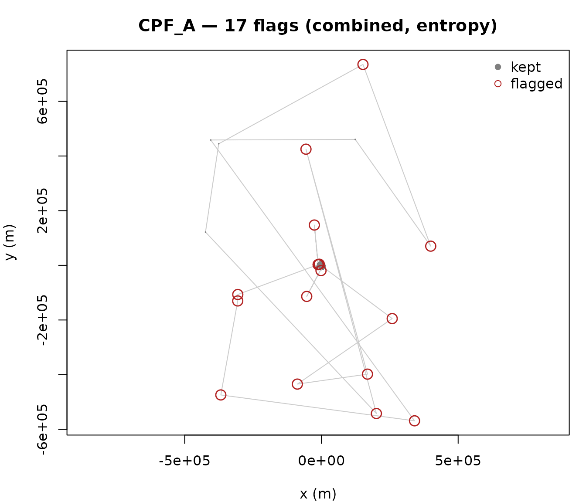
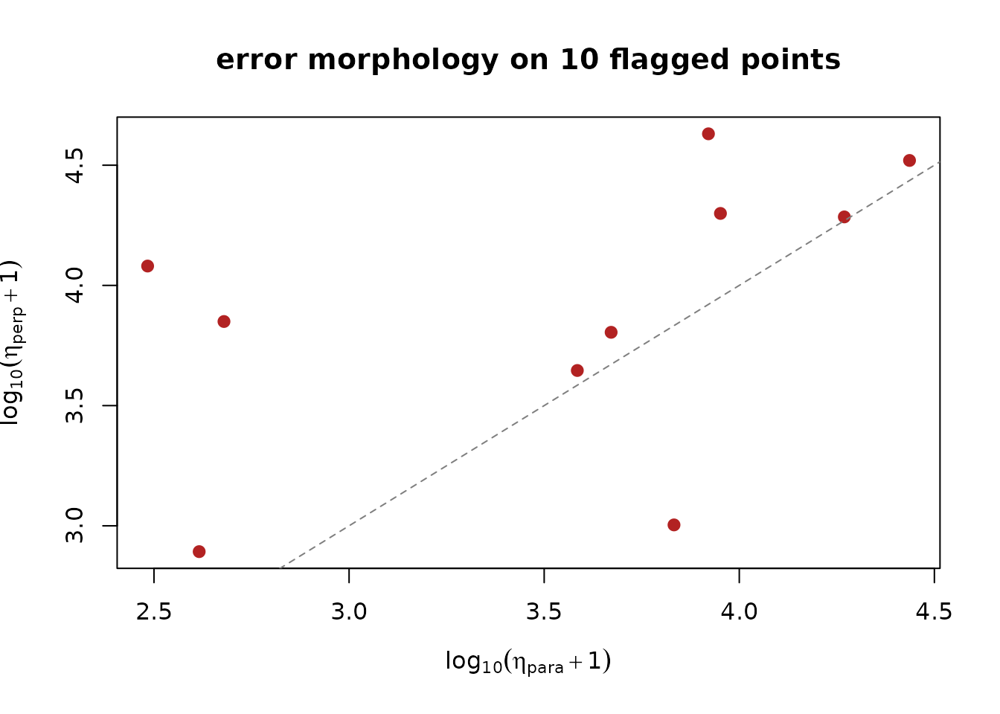

Bridge-residual outlier detection and error-morphology classification
Source:vignettes/OUTLIER_4_outlier_bridge.Rmd
OUTLIER_4_outlier_bridge.RmdThis vignette is about the path-position check,
mt_flag_outliers_bridge(). Use it on its own when you want
to find GPS fixes that sit in the wrong place — a single location that
jumps far from where its neighbours are, then comes straight back. It is
the geometric one of the four checks that mt_clean_track()
combines; running it alone lets you look at just that one signal, or
build your own pipeline on top of it.
We cover what the check does, the directional variant that also tells you what kind of error you found, and how to read the columns it adds.
If you are new to the package, start with
mt_clean_track() instead — it runs this check for you
alongside three others and decides what to flag. Come back here when you
want fine control over this one signal. The unusual-movement check
mt_flag_outliers() is covered in
vignette("OUTLIER_1_getting_started", package = "move2utils").
Both checks share the same threshold machinery but target different
kinds of error, and can be combined.
The idea
If a GPS fix does not belong, the simplest test is: given where the animal was just before and just after, where would you expect the fix in between to be? If the actual fix is far from that expectation — further than the time gap on either side could account for — it is probably wrong.
That is the bridge. For each fix we draw a line (the “bridge”) between its two neighbours in time, weighted by how much time sits on either side, and measure how far the actual fix lies from that line. A small distance means the fix is about where it should be; a large one means something is off.
The key point is that the width of the bridge — how much wandering is plausible over a given time gap — depends only on the timestamps, never on the fix’s own position. A bad fix therefore cannot inflate the tolerance that would have flagged it. Methods that instead scale by a locally-estimated variance suffer from this “leverage problem”, because a bad fix pollutes its own scale.
The formula (for the curious)
For each fix i with projected coordinates p_i and time t_i, its neighbours i-1 and i+1 define a Brownian-bridge expectation
m_i = α p_{i-1} + (1 − α) p_{i+1}, α = Δt₂ / (Δt₁ + Δt₂)
where Δt₁ = t_i − t_{i-1} and Δt₂ = t_{i+1} − t_i.
The residual is r_i = p_i − m_i. It is scaled by the bridge’s own standard-deviation width,
w_i = √(Δt₁ · Δt₂ / (Δt₁ + Δt₂)).
The bridge score is η_i = ||r_i|| / w_i. As noted above, w_i depends only on timestamps, never on positions, so an outlier cannot inflate its own denominator.
Three methods
-
method = "isotropic"uses the plain residual magnitude. General-purpose; answers “is this fix far from where it should be?”. -
method = "directional"splits the residual along the local travel direction into a parallel part (η_para, along-track) and a perpendicular part (η_perp, across-track). It flags on η_perp alone, but the value is in the (η_para, η_perp) pair — it tells you what kind of error each flag is. -
method = "combined"(default) applies the threshold to both scores and flags a fix if either one trips.
The check borrows its bridge-mean construction from the dynamic
Brownian bridge (dBBMM) and its perpendicular split from the dynamic
bivariate Gaussian bridge (dBGB), but deliberately does not use
their variance-estimation step — that is what avoids the leverage
problem. See mt_dbbmm_variance() /
mt_dbgb_variance() for the full dynamic models.
Requirements
- The function accepts longitude/latitude or projected input; it projects internally to a local AEQD for the distance math and returns the result in your original CRS.
- Enough context. With only a handful of locations the bridge neighbours are undefined; in practice you need at least a few dozen locations for the threshold estimator to be stable.
A worked example
inst/extdata/synthetic_tracks.csv.gz contains
central-place-forager tracks with ground-truth outliers for validation.
CPF_A has 23 injected outliers, CPF_B is clean, and CPF_C has 4.
library(move2)
library(sf)
library(move2utils)
path <- system.file("extdata/synthetic_tracks.csv.gz",
package = "move2utils")
tracks <- mt_read(path)
tracks <- tracks[!st_is_empty(tracks), ]
cpfA <- tracks[mt_track_id(tracks) == "CPF_A", ]
cpfA_p <- st_transform(cpfA, mt_aeqd_crs(cpfA))
nrow(cpfA_p)
#> [1] 1748Default run (combined method, entropy threshold)
res <- mt_flag_outliers_bridge(cpfA_p, plot = FALSE)
#> Running bridge-residual detection (method = combined) on 1748 locations...
#> Iter 1: flagged 6 (break at eta = 1591.91 / eta_perp = 406.83).
#> Iter 2: flagged 4 (break at eta = 1472.59 / eta_perp = 1181.90).
#> Iter 3: flagged 7 (break at eta = 1255.69 / eta_perp = 1021.41).
#> === 17 outliers (0.97% of 1748) ===
table(res$is_outlier)
#>
#> FALSE TRUE
#> 1731 17
coords <- sf::st_coordinates(res)
par(mar = c(4, 4, 3, 1))
plot(coords, type = "l", col = "grey80", asp = 1,
xlab = "x (m)", ylab = "y (m)",
main = sprintf("CPF_A — %d flags (combined, entropy)", sum(res$is_outlier)))
points(coords[!res$is_outlier, ], pch = 16, cex = 0.25, col = "grey50")
points(coords[res$is_outlier, ], pch = 1, cex = 1.6,
col = "firebrick", lwd = 1.4)
legend("topright", pch = c(16, 1), col = c("grey50", "firebrick"),
legend = c("kept", "flagged"), bty = "n")
CPF_A synthetic track in projected coordinates. Grey line traces the full track in order; firebrick circles mark the fixes mt_flag_outliers_bridge() flagged under the default combined-entropy configuration. Flagged points sit visibly off the otherwise smooth central-place-forager geometry.
The columns added to the input are
| column | meaning |
|---|---|
bridge_residual |
residual magnitude |
bridge_width |
bridge-width normalisation w_i |
bridge_eta |
score η_i = residual / width (scalar / isotropic) |
bridge_percentile |
empirical quantile of η within the track |
bridge_iteration |
iteration on which the fix was flagged (0 = not flagged) |
is_outlier |
the flag |
The "entropy" threshold (default) is the deepest valley
in the kernel-density estimate of log(η). On clean data the density has
a single hump, there is no valley, and the function returns zero flags —
a no-op guarantee that makes it safe to apply to any
track. The "gap" threshold is more sensitive: it uses a
broken-stick null model plus tail-decay inflection, and will often pick
up borderline points that entropy leaves alone.
res_gap <- mt_flag_outliers_bridge(
cpfA_p,
threshold_type = "gap",
plot = FALSE
)
#> Running bridge-residual detection (method = combined) on 1748 locations...
#> Iter 1: flagged 17 (break at eta = 14.95 / eta_perp = 17.63).
#> Iter 2: flagged 12 (break at eta = 14.89 / eta_perp = 12.14).
#> Iter 3: flagged 8 (break at eta = 14.70 / eta_perp = 14700.18).
#> === 37 outliers (2.12% of 1748) ===
table(res_gap$is_outlier)
#>
#> FALSE TRUE
#> 1711 37Use "gap" when you want sensitivity and can tolerate a
few false positives; use "entropy" (the default) when false
positives cost more than missed outliers, or when the track might
already be clean.
Directional variant — what kind of error?
res_d <- mt_flag_outliers_bridge(
cpfA_p,
method = "directional",
plot = FALSE
)
#> Running bridge-residual detection (method = directional) on 1748 locations...
#> Iter 1: flagged 5 (break at eta_perp = 406.83).
#> Iter 2: flagged 2 (break at eta_perp = 1181.72).
#> Iter 3: flagged 3 (break at eta_perp = 1021.47).
#> === 10 outliers (0.57% of 1748) ===
grep("bridge", names(res_d), value = TRUE)
#> [1] "bridge_residual" "bridge_width" "bridge_eta"
#> [4] "bridge_eta_para" "bridge_eta_perp" "bridge_obs_inflation"
#> [7] "bridge_percentile" "bridge_iteration" "flagged_by_bridge"
#> [10] "loglr_bridge"Two extra columns appear:
-
bridge_eta_para— residual along the local travel direction -
bridge_eta_perp— residual across it
Flags go on bridge_eta_perp (the across-track signal,
usually the clearer mark of genuine measurement error). But the useful
thing is the pair of values for each flag.
Reading the (η_para, η_perp) plane
flags <- res_d[res_d$is_outlier, ]
n_flag <- nrow(flags)
plot(log10(flags$bridge_eta_para + 1),
log10(flags$bridge_eta_perp + 1),
xlab = expression(log[10](eta["para"] + 1)),
ylab = expression(log[10](eta["perp"] + 1)),
pch = 16, col = "firebrick", cex = 1.2,
main = sprintf("error morphology on %d flagged points", n_flag))
abline(0, 1, lty = 2, col = "grey50")
How to read the plane:
- Near the diagonal — η_para ≈ η_perp. Scatter in all directions; classic jitter-type error.
- Below the diagonal (high η_para, low η_perp) — along-track jumps. Ghost reports, clock glitches, GNSS fold-back.
- Above the diagonal (low η_para, high η_perp) — across-track drift. Typical of multipath, reflective environments, or constellation changes that bias one axis.
This is why the isotropic and directional flag sets can look quite different on real data even though both come from the same residual: the isotropic score answers how far, the directional split answers which way. Together they separate error types that one check would lump.
Combining bridge with the other checks
mt_flag_outliers_bridge() is one of four checks in
move2utils; the others are the unusual-movement check
mt_flag_outliers() (probability-based), the there-and-back
check mt_flag_outliers_detour() (geometric,
time-insensitive path-vs-displacement ratio), and the speed check
mt_flag_speed_cap() (step-level physiological cap). They
are complementary:
-
mt_flag_outliers()is probability-based; it does best on multi-state, behaviourally mixed tracks where the gap-aware auto-difference carries the signal. -
mt_flag_outliers_bridge()is geometric and leverage-immune; it does best on long clean tracks and on drift or spoofing. -
mt_flag_outliers_detour()is time-insensitive and scale-invariant; it catches there-and-back spikes at sparse sampling, where the bridge check’s width-scaling loses sensitivity. -
mt_flag_speed_cap()is step-level; it catches the edges of coherent multi-fix error blocks that per-fix checks cannot reach.
The unified mt_clean_track() runs all four for you. A
simple standalone pipeline can instead flag the union (or the
intersection, depending on your cost function) of two of them; the
example below pairs bridge with the unusual-movement check, the most
common combination for moderately-sampled tracks:
prob <- mt_flag_outliers(cpfA_p)
bridge <- mt_flag_outliers_bridge(cpfA_p, method = "directional", plot = FALSE)
both_flags <- prob$is_outlier | bridge$is_outlier
cat("probability:", sum(prob$is_outlier), "\n")
cat("bridge :", sum(bridge$is_outlier), "\n")
cat("union :", sum(both_flags), "\n")For routine use, mt_clean_track() does this composition
for you and adds the speed cap, a rule that combines the four checks
into one decision, and a block-expansion pass that catches coherent
multi-fix clusters that per-fix scoring cannot resolve. By default the
combine rule is consensus = "evidence_corroborated": each
check’s evidence is weighed on a common scale, and a location is flagged
when the combined evidence is positive and either at
least two checks agree or the there-and-back check alone is
overwhelmingly sure. You can pick another rule via
consensus = — "class_aware" (the earlier
default), "strict", "majority",
"speed_trusted", "weighted_evidence",
"any" and "custom" (see
?mt_flag_consensus). Supply v_max when species
biology gives you a physiological cap — that lets the pipeline peel
spoof- or teleport-class clusters at their edges before the bridge and
unusual-movement checks run on what survives.
clean <- mt_clean_track(cpfA_p)
clean <- mt_clean_track(eagle_track, v_max = 30) # eagle ~30 m/s ceilingIterative refinement
A single pass can miss outliers that were themselves used as
neighbours by other outliers. iterations = n re-runs the
check on the currently-clean subset up to n times (default
3), stopping early once nothing new is flagged. Raise it when your
tracks have long runs of consecutive bad fixes.
Disabling neighbour smearing
Next to a real outlier, its two immediate neighbours can look
anomalous too, because one of their bridge expectations rests on a
corrupted point. dedup_neighbours = TRUE (default)
suppresses this neighbour-smearing with a small peak-picking pass. Turn
it off only if you suspect it is masking real clustered errors.
Further reading
-
vignette("OUTLIER_1_getting_started", package = "move2utils")— the unifiedmt_clean_track()workflow and a brief tour of all four checks. -
vignette("OUTLIER_2_diagnose_clean_track", package = "move2utils")— the post-run health check. -
vignette("OUTLIER_3_state_conditional", package = "move2utils")— when the diagnostic flags two behaviours, the recipe for cleaning each behavioural state separately. -
vignette("OUTLIER_5_persistence_score", package = "move2utils")— multi-scale annotation that scores how confident each flag is; useful as a post-cleaning confidence filter. -
vignette("OUTLIER_heterogeneous_error_regimes", package = "move2utils")— cleaning tracks that mix sensors with different error, one sensor at a time. -
vignette("OUTLIER_example_outlier_whitestork", package = "move2utils")— a full narrated cleaning on a real high-frequency stork track. -
vignette("OUTLIER_example_leo_migration", package = "move2utils")— cleaning irregular, large-scale satellite data. -
?mt_flag_outliers_bridge— full argument reference and tuning notes.